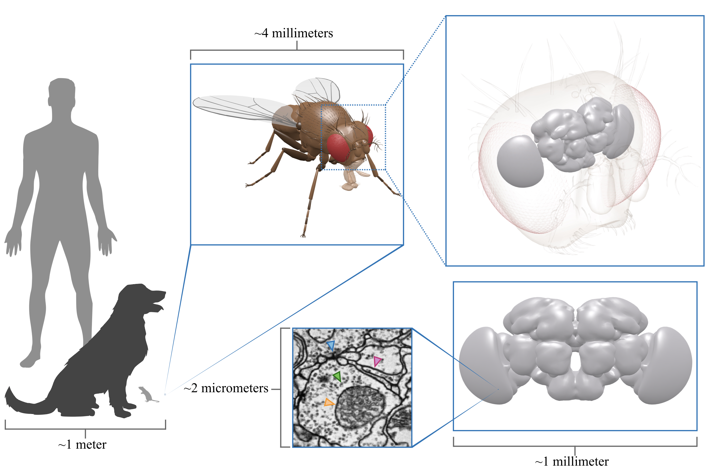

Direction vectors of
the LSDs on a single neuron from the fly visual system. Colors correspond
to the direction in which the neuronal processes travel.
We present a simple, yet effective, auxiliary learning task for the problem of
neuron segmentation in electron microscopy volumes. The auxiliary task
consists of the prediction of Local Shape Descriptors (LSDs), which we combine
with conventional voxel-wise direct neighbor affinities for neuron boundary
detection. The shape descriptors are designed to capture local statistics
about the neuron to be segmented, such as diameter, elongation, and direction.
On a large study comparing several existing methods across various specimen,
imaging techniques, and resolutions, we find that auxiliary learning of LSDs
consistently increases segmentation accuracy of affinity-based methods over a
range of metrics. Furthermore, the addition of LSDs promotes affinity-based
segmentation methods to be on par with the current state of the art for neuron
segmentation (Flood-Filling Networks, FFN), while being two orders of
magnitudes more efficient - a critical requirement for the processing of
future petabyte-sized datasets. Implementations of the new auxiliary learning
task, network architectures, training, prediction, and evaluation code, as
well as the datasets used in this study are publicly available as a benchmark
for future method contributions.
Connectomics is an emerging field which integrates multiple domains including
neuroscience, microscopy, and computer science. The overarching goal is to
provide insights about the brain at resolutions which are not achievable with
other approaches. The ability to study neural structures at this scale will
hopefully lead to a better understanding of brain disorders, and subsequently
advance medical approaches towards finding treatments & cures.
The basic idea is to produce "connectomes" which are essentially maps of the
brain. These maps, or "wiring diagrams", give scientists the ability to see how
every neuron interacts through synaptic connections. They can be used to
complement existing techniques and
drive future experiments .
Okay, but how are the brain maps generated?
Before generating neural wiring diagrams, we first need to acquire the brain
tissue to use. Currently, only Electron Microscopy (EM) allows imaging of neural
tissue at a resolution sufficient to see individual synapses. After extracting a
brain (for example, from a fruit fly), the tissue is generally stained with
heavy metals to increase contrast between structures of interest (i.e neuron
membranes). Once stained, the tissue is imaged with an electron microscope.
There are a few types of EM imaging approaches. Three popular techniques are
serial section transmission EM (ssTEM), serial block-face scanning EM (SBF-SEM)
and focused ion beam scanning EM (FIB-SEM). The former two methods involve
slicing the brain into super thin (e.g 20 nanometer) sections. The latter uses
an ion beam to erode the tissue. In either case, electrons are shot at the
tissue to produce an image of the data. This is a way oversimplified
explanation, for a better overview of these EM imaging techniques (and others),
see this paper, specifically
Figure 1.
Sweet! Let's image a human brain and be done with it.
Unfortunately, by imaging brains at such high resolution, the resulting data is
massive. Let's consider the fruit fly example. A full adult fruit fly brain
(FAFB) imaged with ssTEM at a
pixel resolution of ~4 nanometers and ~40 nanometer thick sections, comprises
~213 teravoxels of data (~50 teravoxels of actual brain tissue). For reference, a voxel is a volumetric
pixel, and the "tera" prefix means 1012. So, one fly brain contains
upwards of 213,000,000,000,000 volumetric pixels. To put that in perspective,
Abbott et al. argue that, assuming a
scale where 1000 cubic microns is equivalent to 1 centimeter, a fruit fly brain
would comprise the length of 6 and a half Boeing 747 aeroplanes. This still
pales in comparison to a mouse brain which would be the distance from Boston to
Lisbon, and require the acquisition of 1 million terabytes of data.

Scale perspective. A
fruit fly brain imaged at synaptic resolution takes up 100's of terabytes of
storage space. It allows us to see fine structures such as neural plasma
membranes (pink arrow), synapses (blue arrow), vesicles (green arrow) and
mitochondria (orange arrow). 3D fruit fly model kindly provided by Igor Siwanowicz
Try navigating the fly brain in an interactive Neuroglancer
viewer (click question mark for controls). Think, Google Earth for brains:
Okay, now we have the data, so how do we create the wiring diagrams?
To create a wiring diagram, we need to reconstruct all of the neurons and their
synaptic connections. This process can be done manually - which consists of
human annotators navigating these datasets and labeling every neuron and their
synaptic partners using various software .
However, this can become extremely tedious and expensive ($$$) given the
size of the datasets. For example, simply reconstructing 129 neurons from
FAFB took a team of tracers ~60 days to complete. Given that a fruit fly has ~100,000
neurons, purely manual reconstruction of connectomes is obviously infeasible.
Consequently, methods have been developed to automate this process. From here
on, we will focus on the automatic reconstruction of neurons. To see the current
approaches to synapse detection, check
these papers out!
Neuron Segmentation
Neuron segmentation is the current rate-limiting step for generating large
connectomes. Errors in a neuron segmentation can easily propagate throughout a
dataset as the scale increases, which makes it tedious for humans to proofread
the data without advanced tools.